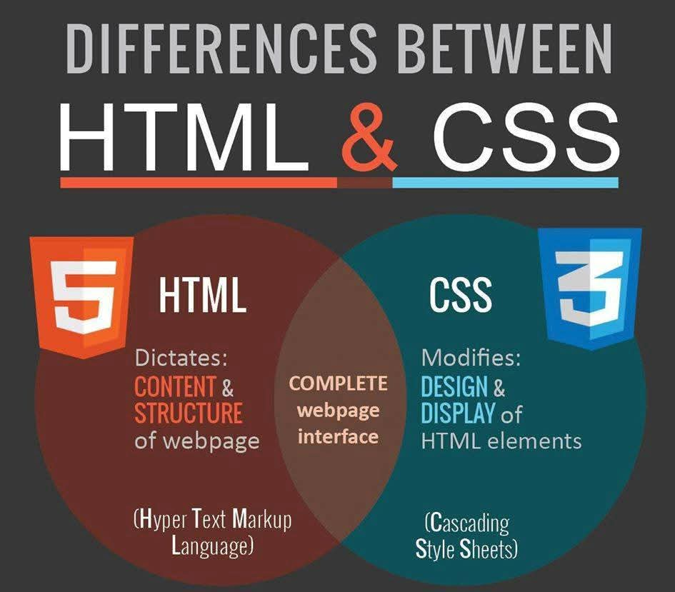

إعداد الطالبة: رغدة محمد أحمد رأفت
الرقم الجامعي: 2501260
يوفر CSSالكثير من الجهد فهو يستطيع التحكم في تصميم صفحات الويب المتعددة دفعة واحدة ولغة CSS هي اللغه التي نستخدمها لتنسيق مستند HTML لغة CSS او صفحات الأنماط (الأنسيابيه أو المتعاقبة أو المتسلسله) بالإنجليزية: Cascading style sheets هي لغة تنسيقية تُستخدم لوصف التمثيل البصري لمستند ما مكتوب بلغة هيكليه، مثل صفحات HTML أو مستندات XML بما في ذلك ملفات SVG. تُستعمَل عادةٌ مع لغتَي HTML وJavascript لإنشاء صفحات وتطبيقات ويب ذات تنسيق جذّاب وواجهات سهلة الاستخدام.
لغة CSS هي لغة تنسيقية كما أشرنا تُستخدم في تنسيق مستندات وملفات مكتوبة بصيغة معينة أو هيكلية، والغرض الرئيسي من لغة CSS هو تمكين الفصل بين شيفرة المحتوى وشيفرة العرض بما في ذلك التخطيط والألوان والخطوط؛ وهذا الفصل يمكن أن يساهم في تحسين قابلية الوصول ويوفر مرونة في التحكم بخصائص العرض وطريقة تنسيقها اعتمادا على الجهاز المستخدم وتساعد لغةCSS أيضا في تسهيل التعديلات، إذ يمكن تعديل ملف مكتوب بلغة CSS واحد للتأثير على عشرات الصفحات في الموقع
بينما لغة CSSهي لغة تنسيقStyling language تستخدم للتحكم في تنسيق وتخطيط عناصر صفحة الويب فمن خلالها يمكنك أن تكتب قواعد تحدد لون ونوع الخطوط المستخدمة في الفقرات وأحجام العناوين وتحدد مكان أو موضع ظهور العناصر المختلفة على الصفحة يتكون الكود المكتوب بلغة HTML من الوسوم المحية بالمحتوى لتوصيفه، على سبيل المثال إذا أردت أن تضيف فقرة لصفحة الويب عليك أن تضيف محتوى الفقرة بين الوسمين
و
ليفهم المتصفح أن هذا المحتوى يمثل فقرة نصية وإذا أردت أن تضيف جدولا عليك أن تضعه بين الوسمين
تعد لغة CSS من اللغات سهلة التعلم والاستخدام للمبتدئين، وهي تقدم العديد من الفوائد ومن أبرز فوائد واستخدامات لغة CSS:نذكر
تسمح أكواد CSS بتخصيص التنسيق وتحديد العناصر التي تريد تنسيقها في صفحة الويب بعدة طرق من خلال توفير عدة أنواع للمحددات كي تتمكن من استهداف العنصر الذي تريده بالضبط ضمن قاعدةCSS وأبرز أنواع المحددات هي:
يستهدف محدد النوع جميع العناصر من نوع معين على سبيل المثال المحدد h1يستهدف جميع العناوين الرئيسيه،ويستهدف محدد الصنف جميع العناصر التى تملك صنف معين مثل button الذي يساعد على تنسيق جميع العناصر التي تملك Class يساوى button. ويستهدف محدد المعرف العنصر الذي يملك معرف فريد في الموقع على سبيل المثال يمكنك المحدد header# من استهداف العنصر الذي يملك id يساوي header
يستهدف محدد الخاصية جميع عناصر صفحة الويب التي تحمل قيمة خاصية معينة، علي سبيل المثال لاستهداف جميع العناصر التى لديها خاصية title قيمتها hello يمكنك أن تكتب المحدد بالشكل التالي["title ="hello ] واستهداف كافة الصور الموجودة في صفحتك والتي تمتلك خاصية alt تساوي hero يمكنك أن تكتب المحدد بالشكل التالي img[alt="hero"]
يستهدف محدد الصنف الزائف كافة عناصر الصفحة التي لها حالات معينة، على سبيل المثال يستهدف المحدد a:hover الروابط في حال مرور مؤشر الفأرة فوقها أما محدد العنصر الزائف فهو يمكنك من استهداف جزء معين من العنصر بشكل زائف على سبيل المثال يمكنك تنسيق الحرف الاول من كل فقرة من خلال المحدد p::first-letter أو السطر الاول من فقرة من خلال المحدد p::first-line
يمكنك من خلال محددات التجميع استهداف العناصر بالنسبة لبعضها البعض، حيث يمكن من خلالها استهداف العناصر الإخرة المتجاورة Adjacent Sibling Selector في الصفحة علي سبيل المثال لاستهداف اول عنصر
يأتي بعد العنصر
الموجودة داخل عنصر
يستخدم المحدد العام في لغة CSS لتحديد جميع العناصر في صفحة ويب، علي سبيل المثال يمكنك من خلال المحدد العام تغير لون النص أو نوع الخط المستخدم لجميع عناصر صفحة HTML
في لغة CSS:توجد خمس عائلات خطوط عامة
الصندوق Flexbox Layout توفر وحدة المرن طريقة أكثر كفاءة لتخطيط ومحاذاة وتوزيع المساحة بين العناصر في حاوية، حتى عندما يكون حجمها غير معروف أو ديناميكي(ومن هنا جاءت كلمة "مرن") تتمثل الفكرة الرئيسية وراء تصميم Flex في منح الحاوية القدرة على التغير عرض/إرتفاع عناصرها (وترتيبها) لملء المساحة المتاحة على النحو الامثل (وذلك بشكل أساسي للتكيف مع جميع انواع أجهزة العرض وأحجام الشاشات ) تقوم حاوية Flex بتوسيع العناصر لملء المساحة الفارغه المتاحة او تقليصها لمنع تجاوز المساحة المتاحة. الاهم من ذلك، أن تصميم Flexbox لا يتقيد باتجاه معين، على عكس التصميمات التقليديه (مثل Block الذي يعتمد على الاتجاه الرأسي وInline الذي يعتمد على الاتجاه الافقي) ورغم أن هذه التصميمات مناسبة للصفحات، إلا أنها تفتقر الى المرونه اللازمه لدعم التطبيقات الكبيرة او المعقدة (خاصة فيما يتعلق الاتجاه وتغير الحجم والتمديد، والتقليص،وما الي ذلك)
بما أن Flexbox عبارة عن وحدة كاملة وليست خاصية واحدة، فإنها تشمل العديد من العناصر، بما في ذلك مجموعة خصائصها الكاملة بعض هذه الخصائص يُفترص ضبطها على الحاوية (العنصر الأب، المعروف باسم "حاوية Flex") إذا كان التصميم"العادى" يعتمد على كل من اتجاهات التدفق الكتلي والتدفق الخطي، فإن التصميم المرن يعتمد على "اتجاهات التدفق المرن ".
| وجه المقارنة | Flexbox | CSS Grid |
|---|---|---|
| الاتجاه | في اتجاه واحد، صف أو عمود | في اتجاهين، صف وعمود مع بعض |
| الأفضل لـ | توزيع العناصر الصغيرة | تخطيط الصفحة الكبيرة |
| التحكم | سهل وسريع | أدق وأقوى |
في ختام هذا البحث تعرفنا على دور لغة CSS الاساسي في تنسيق وتصميم صفحات الويب، وأن لغة CSS لم تعد أداة لتجميل صفحات الويب بل أصبحت حاجة اساسية في تطوير واجهات المستخدم الحديثة وتكلمنا وتعرفنا على فوائدها والتي هي تحسين صفحات الويب وجعلها اكثر جمالا وتسهل علينا تعديل وصيانة التنسيقات ففي حال احتجت لتغيير تنسيق أجزاء من الصفحات وناقشنا البحث عن عائلات الخطوط العامة في CSS بإلاضافه إلى شرح نظام Flexbox كأحد أهم أساليب التخطيط الحديثة والمرنة